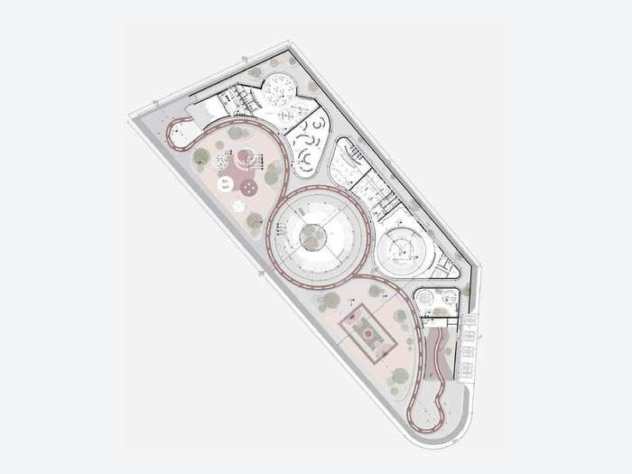
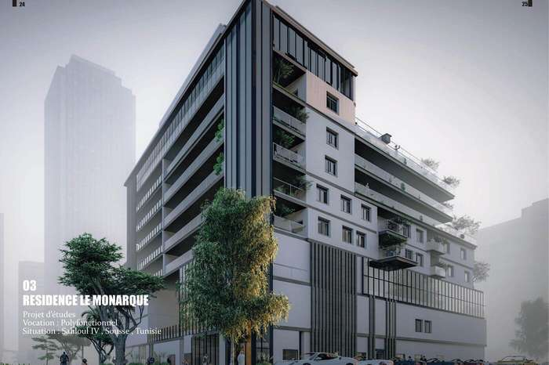
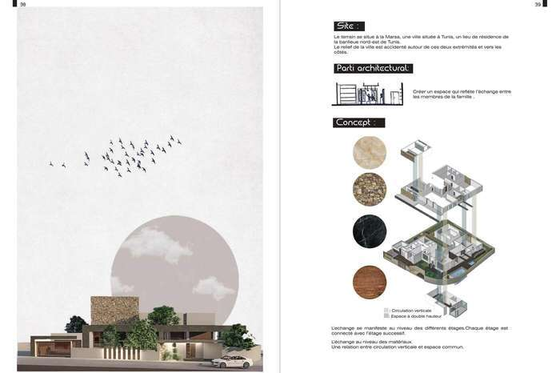

Portfolio
architectural

Global Health Clinic
Projet d'études d'un complexe hospitalier conçu autour d'un principe de masse divisée : hospitalisation en partie supérieure, blocs opératoires en partie inférieure. Le soulèvement crée un espace intermédiaire dédié à la connexion avec la nature et la lumière, favorisant un environnement de rétablissement apaisant. Façade double-peau en lamelles de bois et acier.

L'Arena de Réconciliation
Espace inclusif favorisant le développement comportemental progressif des enfants marginalisés dans le quartier périphérique de Tafela. Un anneau immersif structure le programme — toitures pliées créant des espaces de liberté et de jeu, où la clôture devient sol et l'espace public devient privé. Le bâti lui-même se fait terrain de jeu.

Résidence Le Monarque
Immeuble polyfonctionnel organisé autour d'une cour centrale ouverte, noyau dynamique de la structure. Le parallélépipède de base est tronqué stratégiquement pour créer la cour — apportant lumière naturelle et ventilation à travers les niveaux. Les terrasses s'étendent depuis les étages, offrant des espaces de vie extérieurs aux résidents.

Villa Serenity
Villa conçue comme un espace reflétant l'échange entre les membres de la famille. La circulation verticale dialogue avec les espaces communs à double hauteur, chaque étage connecté au suivant. L'échange se manifeste aussi dans les matériaux — pierre, bois, marbre — articulés autour de plans d'eau, piscines intérieure et extérieure, et patios végétalisés.